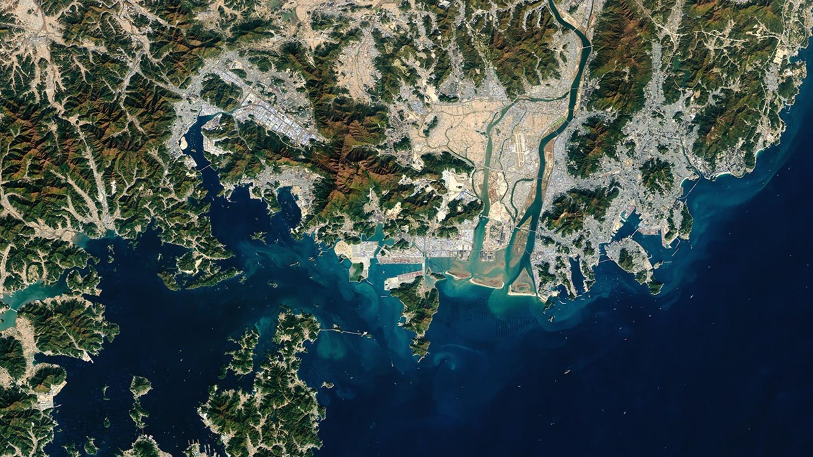

Nature Communications
2026
Global patterns of urban heat shaped by climate and morphology
Examines how background climate and the surrounding built environment shape urban heat across 2,213 cities.
Read the paper
Pusan National University
Urban Earth Intelligence Lab
We connect Earth observation and geospatial AI to understand changing cities and advance climate resilience.
Explore our researchOur perspective
도시를 관측하고, 변화를 이해하다.
Urban Earth Intelligence Lab studies the relationships between urban development, climate, and sustainability. We turn satellite observations and geospatial data into evidence for cities.
Based at Pusan National University, our work spans urban morphology, heat risk, industrial land and carbon emissions, and the cooling potential of green infrastructure.
Four connected research directions
 Observe
ObserveMapping the structure of cities and how urban growth reshapes their thermal environments.
 Assess
AssessUnderstanding when, where, and for whom urban heat creates the greatest risk.
 Explain
ExplainConnecting industrial land expansion with economic growth and unequal carbon costs.
 Act
ActAssessing where trees and targeted urban interventions could deliver greater cooling benefits.
From our research
Examines how background climate and the surrounding built environment shape urban heat across 2,213 cities.
Read the paperProvides a 10-m industrial land dataset spanning more than 1,000 large cities from 2017 to 2023.
Read the paperMaps industrial land and compares its links to economic growth and carbon emissions across development contexts.
Read the paperPrincipal investigator
Assistant Professor
Smart City Convergence Major
Pusan National University
My research brings together remote sensing, geospatial AI, and urban climate science to understand how cities change—and how that knowledge can support more sustainable urban futures.
Connect with UEI Lab